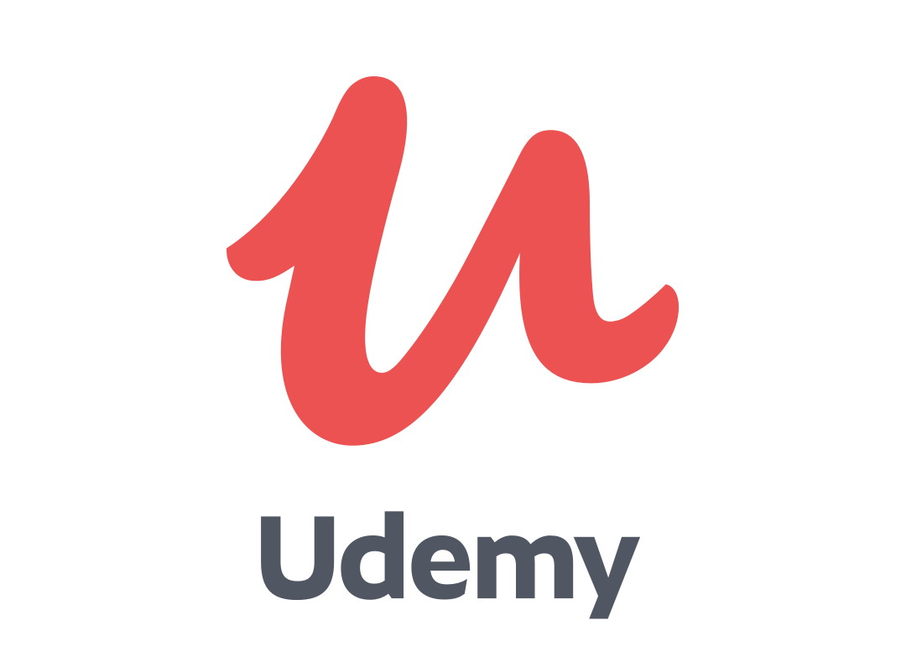

Jenis-Jenis Courses di PCC
1. dicoding

Dicoding merupakan sebuah platform bagi developer Indonesia untuk belajar, membuat karya digital, meraih validasi industri atas karya tersebut, serta mencari pekerjaan di perusahaan mitra. Dicoding menawarkan developer journey yang utuh, dimulai dari Academy. Developer yang ingin belajar pemrograman dapat mengikuti kelas di Academy, pilar utama kami. Selain itu, tersedia banyak event workshop, seminar, pelatihan, ataupun meetup gratis yang bisa developer ikuti dengan mendaftar di Event.
Dicoding memiliki platform pembelajaran elektronik di laman Dicoding.com. Untuk lebih lengkapnya, silahkan klik dicoding
2. Coursera

Coursera adalah salah satu platform online course paling terkenal secara global. Coursera menawarkan pembelajaran online dalam hubungannya dengan beberapa universitas terbaik di sekitar. Pelatihan daring mulai dari kursus singkat (juga dikenal sebagai Massive Open Online Courses, atau MOOCs) hingga spesialisasi dalam topik tertentu dan gelar online, jadi ada beragam pilihan untuk dipilih.
Staf pengajar Coursera adalah instruktur ahli dari universitas terkemuka, jadi kualitas pengajarannya tinggi. Karena beberapa perusahaan terkenal di dunia menggunakan Coursera untuk pelatihan karyawan, Anda dapat yakin bahwa Anda mendapatkan keterampilan kerja yang Anda butuhkan juga. Semua kursus disampaikan sepenuhnya online, dengan kombinasi video, teks, unduhan, dan kuis untuk menguji pengetahuan Anda.
Coursera berfokus pada Spesialisasi: serangkaian kursus yang dirancang untuk membangun keterampilan Anda dalam topik tertentu. Misalnya, "Struktur dan Algoritma Data" mencakup enam kursus yaitu struktur Data Dasar, Algoritma Dasar, Algoritma Grafik, Algoritma String, Algoritma Lanjutan, dan Genome Assembly.
Untuk lebih lengkapnya, silahkan kunjungi halaman berikut coursera
3. Udemy
Udemy adalah salah satu platform belajar dan kursus online yang sangat populer dan berpengaruh di dunia dengan banyak kategori, mulai dari kategori desain, marketing hingga kursus coding. Udemy adalah platform yang mengusung kursus online dengan kategori yang sangat beragam. Sejak Udemy didirikan pada tahun 2007, Udemy telah berkembang menjadi salah satu platform pembelajaran terbesar di dunia, menawarkan lebih dari 130.000 kursus, tersedia dalam 60 bahasa dan membantu lebih dari 30 juta siswa (pelajar) dari 190 negara. Udemy pun dapat diakses dari mana saja selama Anda terhubung dengan internet.
Untuk lebih lengkapnya, silahkan kunjungi halaman berikut udemy